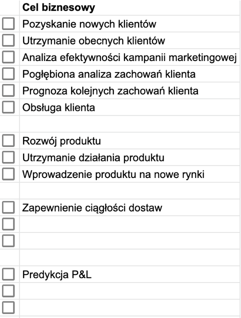
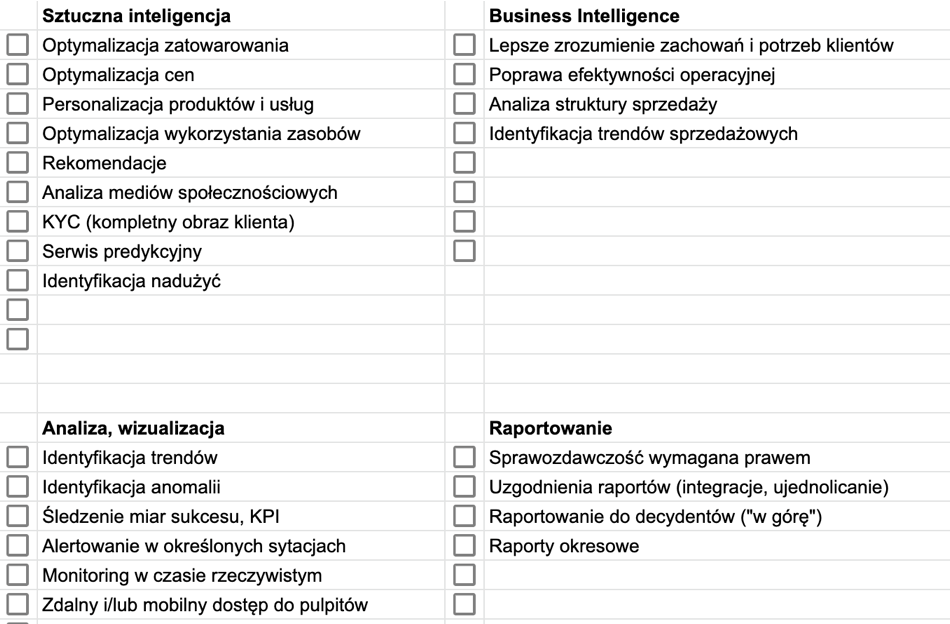
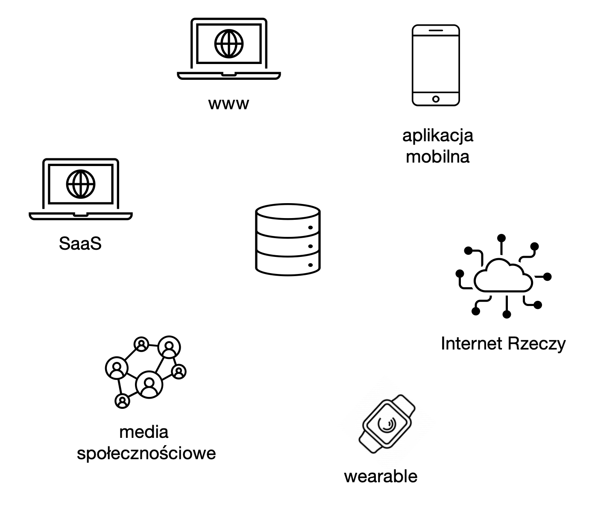
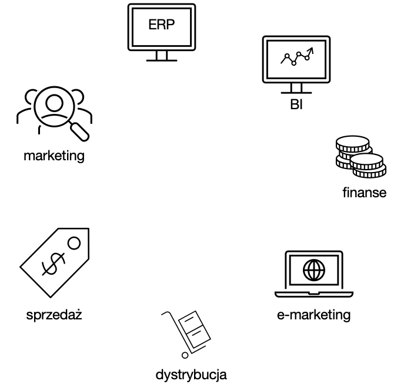

2.3 Konsumenci danych
Analizę potrzeb, która będzie podstawą dla projektu architektury systemu IT/uczenia maszynowego, warto rozpocząć od zbadania potrzeb użytkowników końcowych (konsumentów danych), podstawowych celów biznesowych i typowych scenariuszy użycia.
Kluczowe pytania, które warto zadać na tym etapie, to:
W jaki sposób konsument danych chce z nich korzystać? Do raportowania, tworzenia wizualizacji, podejmowania decyzji, a może do budowania modeli Machine Learning (ML)?
Jakie narzędzia są aktualnie używane przez użytkowników? Microsoft Excel, Tableau, Microsoft Power BI lub Google Data Studio?
Czy istnieją jakieś standardy w ramach danej grupy użytkowników? Dział prawny może potrzebować danych w innej postaci niż księgowość czy finanse.
Możliwe cele biznesowe to:

Najbardziej typowe scenariusze użycia:

2.3.1 Producenci danych
 Typowe źródła danych o zdarzeniach to:
- Strony www generujące dane o zachowaniach użytkownika:
- Pobrania
- Kliknięcia
- Wypełnienie formularza
- Komentarze
- Media społecznościowe:
- Publikacja wpisu
- Udostępnienie obiektu (wpis, zdjecie, film, …)
- Polubienie obiektu
- Hashtag
- Wystawienie opinii
- Systemy IT, generujące sygnały takie jak:
- Replikacja danych
- Synchronizacja danych
- Uruchomienie zadania
- Wykasowanie zadania, etc.
- Sensory, np.
- Detektory ruchu
- Detektory głosu
- Detektory temperatury
- Detektory dymu, etc.

Typowe źródła danych o obiektach to:
Systemy transakcyjne i dziedzinowe (ERP, CRM, etc.)
Bazy danych
Hurtownie danych
Pliki i (rozproszone) systemy plików
Źródła zewnętrzne, API (Application Programming Interface).